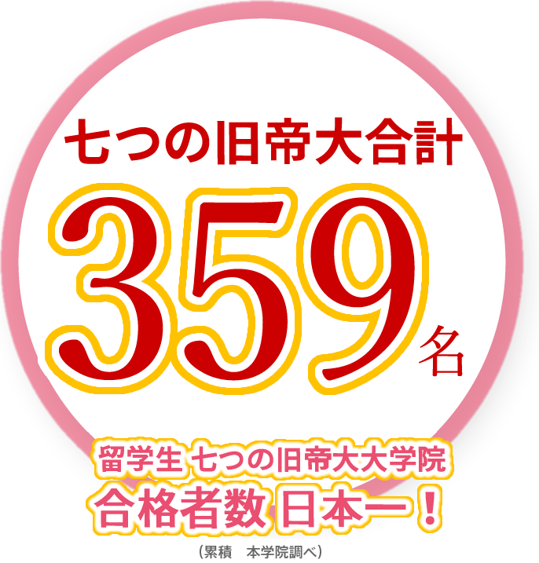

以上の七つの旧帝大は皆100年以上の歴史を持つ、世界的に有名な国立（学費は安い）大学です。
七っの旧帝大への進学は本学院の基本的な進学指導方針です。魯迅は東北大学、郭沫若は九州大学に留学したことがあります。
- 東京大学
- 11
- 京都大学
- 9
- 大阪大学
- 23
- 名古屋大学
- 20
- 九州大学
- 234
- 北海道大学
- 25
- 東北大学
- 37
- 茨城大学
- 1
- 埼玉大学
- 2
- 東京外国語大学
- 1
- 東京学芸大学
- 1
- 大阪教育大学
- 2
- 大阪市立大学
- 1
- 札幌市立大学
- 1
- 山口大学
- 1
- 山梨大学
- 1
- 宇都宮大学
- 1
- 一橋大学
- 1
- 香川大学
- 7
- 徳島大学
- 2
- 高知大学
- 2
- 長崎県立大学
- 2
- 佐賀大学
- 3
- 熊本大学
- 11
- 鹿児島大学
- 2
- 琉球大学
- 1
- 横浜国立大学
- 20
- 筑波大学
- 10
- 東京工業大学
- 7
- 千葉大学
- 10
- 神戸大学
- 14
- お茶水女子大学
- 10
- 広島大学
- 35
- 神戸市外国語大学
- 2
- 県立広島大学
- 2
- 首都大学東京
- 5
- 京都府立大学
- 1
- 新潟大学
- 1
- 北海道教育大学
- 3
- 上智教育大学
- 1
- 三重大学
- 2
- 群馬大学
- 1
- 小樽商科大学
- 1
- 岡山大学
- 1
- 九州工業大学
- 1
- 福岡教育大学
- 1
- 北九州市立大学
- 2
- 福岡女子大学
- 4
- 長崎大学
- 4
- 宮崎大学
- 1
- 大分大学
- 2
他
- 早稲田大学
- 20
- 慶応義塾大学
- 6
- 上智大学
- 3
- 関西大学
- 11
- 立命館大学
- 19
- 青山学院大学
- 1
- 明治大学
- 1
- 南山大学
- 1
- 中央大学
- 2
- 学習院大学
- 1
- 関西学院大学
- 1
- 東京国際大学
- 2
- 大阪観光大学
- 1
- 大阪産業大学
- 4
- 同志社大学
- 6
- 四日市大学
- 3
- 至誠館大学
- 1
- 愛知大学
- 1
- 中京学院大学
- 2
- 駒沢大学
- 2
- 千葉工業大学
- 1
- 神戸国際大学
- 1
- 日本大学
- 1
- 崇城大学
- 1
- 福岡大学
- 11
- 福岡女学院大学
- 1
- 専修大学
- 1
- 東海大学
- 2
- 名城大学
- 1
- 流通科学大学
- 1
他
※〜2015年までの合格者数です （一部）
七つの旧帝国大学への進学
九州外国語学院では、各国の大学・大学院を卒業した優秀な学生には、七つの旧帝国大学への大学・大学院への進学を積極的に進めています。
七つの旧帝大への進学は本学院の基本的指導方針でもあり、毎年多くの学生が各自の夢を叶えています。
日本国内の7つの旧帝大は、どれも100年ほどの歴史を誇る世界的に有名な大学です。この中のほとんどは世界大学ランキングでも100位以内にランクインしています。
どれも国立大学であり、当然私立大学と比較しても学費は安く、二本国内でも特に優秀な教授の講義を受けることができ、有能な留学生の受け入れも充実しています。また、これらの大学は、ノーベル賞やフィールズ賞等の受賞者を多数輩出していることも特徴にあげられます。